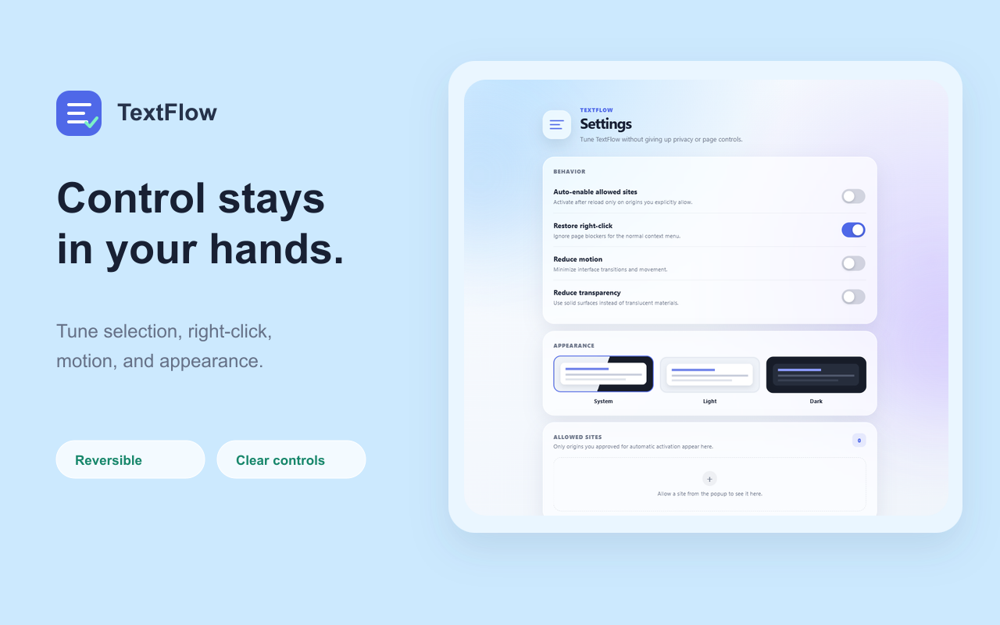
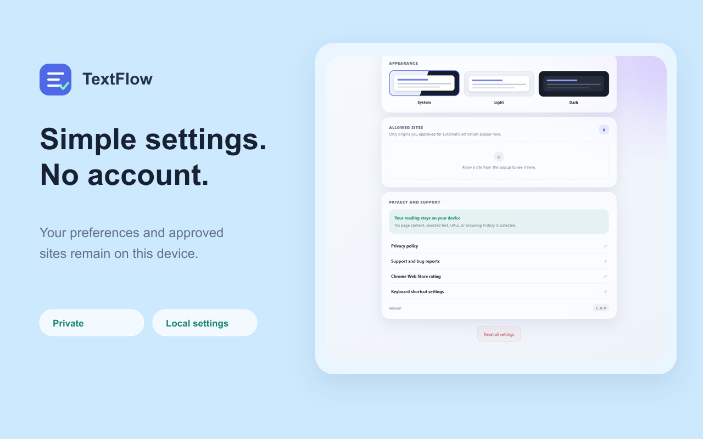
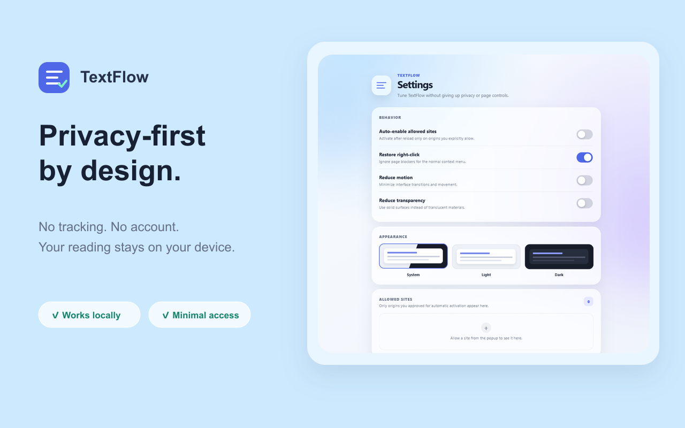

One click, current tab
Open TextFlow and restore normal selection for the page in front of you. Click again to return it to its original behavior.
Privacy-first Chrome accessibility
TextFlow restores ordinary text selection, copying, dragging, and right-click on pages you can already access.
Available now · Free to install · No account or tracking.
Inputs and controls stay protected.
A calmer way to read
TextFlow has one focused job. Every permission and setting is built around that job—and nothing else.
Open TextFlow and restore normal selection for the page in front of you. Click again to return it to its original behavior.
Optional per-site access lets TextFlow activate after reload—and Chrome asks before a site is added.
Inputs, buttons, editors, maps, media, canvas, and drag controls are deliberately left alone.
Designed for control
See what TextFlow does, what it stores, and what always stays yours.



Actual extension. Actual page.
This short demo shows the packaged extension enabling selection, selecting real text, and returning control to the user.
Small extension, serious defaults
Select and copy ordinary text on pages that suppress standard browser behavior.
Restore the normal context menu when a page blocks it with client-side handlers.
No account, server, analytics, advertising, tracking, or remotely hosted code.
Disable TextFlow for the tab at any time. Your original page behavior returns immediately.
Automatic activation is opt-in and limited to origins you explicitly approve.
Choose system, light, or dark appearance and reduce motion or transparency.
Honest by design
TextFlow does not bypass logins, subscriptions, DRM, CAPTCHA, downloads, server permissions, Chrome security pages, or the built-in PDF viewer. Compatibility varies with page structure.
Good questions
No. TextFlow does not collect, store, or transmit page content, selected text, URLs, or browsing history. Its work happens locally in your browser.
No. TextFlow only helps with ordinary browser interactions on content you can already access. It does not bypass logins, subscriptions, DRM, CAPTCHA, downloads, or server permissions.
Chrome protects browser settings pages, the Chrome Web Store, the built-in PDF viewer, and some other surfaces from extensions. TextFlow respects those boundaries.
TextFlow is designed to preserve interactive controls, but page structures vary. If a page behaves unexpectedly, disable TextFlow for the tab and contact support.
Keep the web readable
TextFlow is now available on the Chrome Web Store. Install it free, then restore ordinary text interaction with one click.